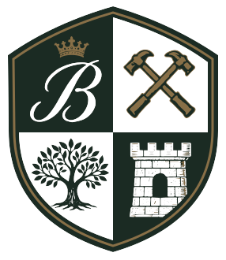
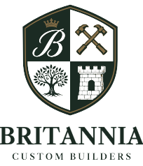
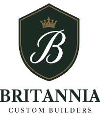
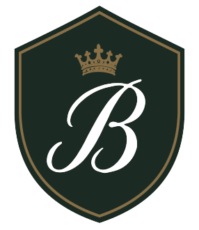
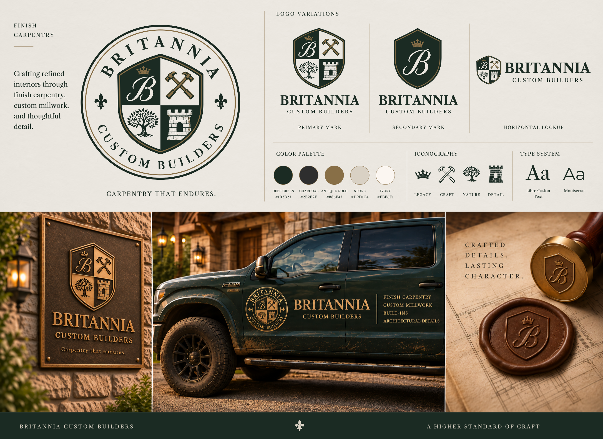
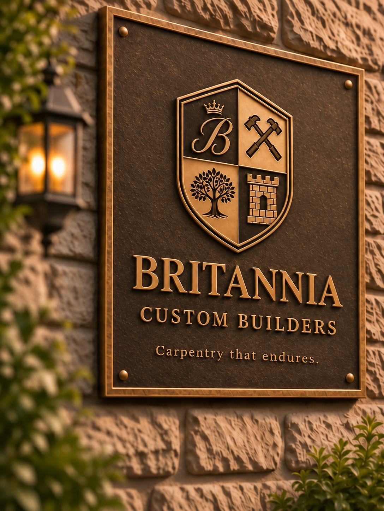
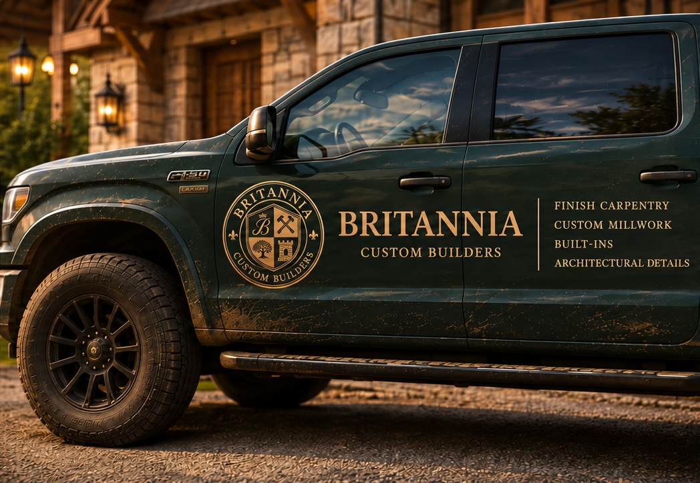
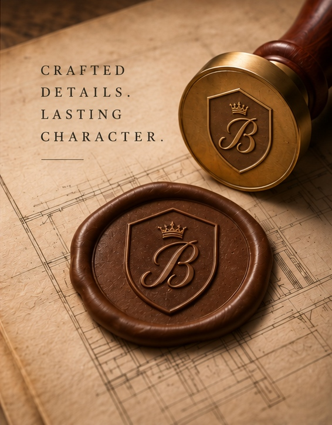

Legacy
The crowned script B carries the Britannia name with quiet confidence.
FINISH CARPENTRY · CUSTOM MILLWORK
An identity rooted in legacy.
A standard shaped by craft.
THE BRITANNIA CUSTOM BUILDERS BRAND SYSTEM
01 / OUR FOUNDATION
The crest brings together legacy, craft, nature and detail. Use these four ideas to guide how Britannia looks, sounds and presents its work.

THE PRIMARY CRESTThe crowned script B carries the Britannia name with quiet confidence.
Crossed hammers honor the skill, care and hands behind every piece.
The olive tree connects skilled woodworking to the natural materials at its heart.
The stone tower stands for precision, durability and care in every detail.
02 / THE IDENTITY FAMILY
Keep the heraldry intact. Choose the format that gives it room to breathe.

Use on proposals, presentation covers and stationery where the full name and crest can be read clearly.
Download SVG Editable lettering
Use as a supporting signature on small items, social avatars and layouts where the Britannia name already appears.
Download SVG Editable letteringUse in website headers, vehicle graphics and narrow layouts. Keep the crest and lettering together at their supplied proportions.
Download SVG Editable lettering
Keep a clear margin of at least ¼ of the crest width around the entire mark. Keep text, images and page edges outside this area.

Single-color editions use the same vector geometry. Choose gold or ivory on a dark ground, and green on a light ground.
Start at 40 mm for the seal, 20 mm for the crest and 10 mm for the B shield. Check a physical proof for engraving, embroidery or cut vinyl.
03 / THE PALETTE
Build layouts with Deep Green, Stone and Ivory. Use Antique Gold for restrained accents and Charcoal for supporting text. Select a swatch to copy its color code.
Use green on ivory for reading. Reserve gold for ornament and larger display accents. Print colors require a printer-specific conversion and a material proof.
04 / THE TYPE SYSTEM
Use Libre Caslon Text for expressive headlines and reading copy. Use Montserrat for navigation, labels and practical information.
Warm, literate and assured. For headlines, editorial statements and considered prose.
ABCDEFGHIJKLMNOPQRSTUVWXYZ
abcdefghijklmnopqrstuvwxyz
0123456789 & . ,
Clear supporting typography for navigation, captions and useful details.
05 / THE WORKING SYSTEM
Use generous margins, fine gold rules and a clear reading order. Keep buttons and panels simple so the identity and photography remain the focus.
Crafted details.
Lasting character.
Assured. Thoughtful. Human.
8 px base · 16 / 24 / 32 / 48
Fine gold rules · square edges
06 / ORNAMENT & RHYTHM
Use these repeating motifs on packaging interiors, stationery backs and secondary panels. Keep contrast low and give logos and text an unpatterned area.
07 / THE MATERIAL WORLD
Choose photography that reveals materials and workmanship: natural light, stone, timber, joinery and architectural detail. Favor believable color and texture over glossy effects.

Download the brand board PNG ↓ · Download the presentation SVG ↓
08 / OUT IN THE WORLD
Apply the identity with the same care as the work it represents. These examples show how color, materials and logo placement come together on signage, vehicles and correspondence.

Pair the crest with durable materials such as bronze, dark painted metal and stone. Allow enough space around the mark for it to read from a distance.

Use the horizontal lockup on broad, uncluttered panels. Keep contact details separate and check legibility at the intended viewing distance.

Use the crest or B shield on seals and small finishing details. Request a sample to check that fine lines remain clear in the chosen material.
Use these images to communicate the intended finish and placement. For production, supply the separate vector logo and confirm dimensions, materials and a proof with your fabricator. The kit also includes an editable A4 letterhead.
09 / THE ASSET LIBRARY
Choose SVG for scalable design and print placement, or transparent PNG for presentations and office documents. The complete kit also includes symbols, patterns, fonts, color files, application examples and these guidelines.
Download brand kit ↓37 SVG variants · 6 transparent PNGs · editable text
5 SVG symbols · 2 repeat patterns · shared artwork
Application examples · editable A4 letterhead
HEX / RGB · JSON · CSS · GPL
Logo use · typography · layout · production